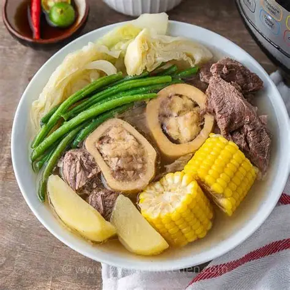

Tatak Pinoy
Bulalo
A light beef shank and bone marrow soup served with vegetables and corn.
Ingredients
- Beef shank with bone marrow
- Onion
- Peppercorns
- Corn
- Cabbage
- Pechay
- Fish sauce
- Water
Cooking Procedure
- Boil beef shanks until tender, remove scum.
- Add onion and peppercorns.
- Add corn and simmer.
- Add vegetables.
- Season with fish sauce.
- Serve hot.